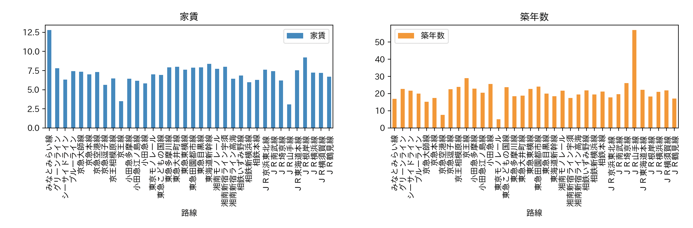
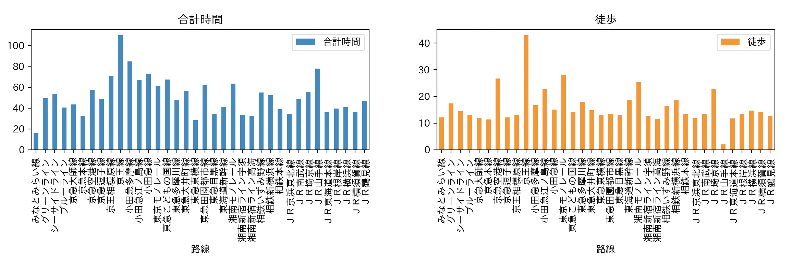
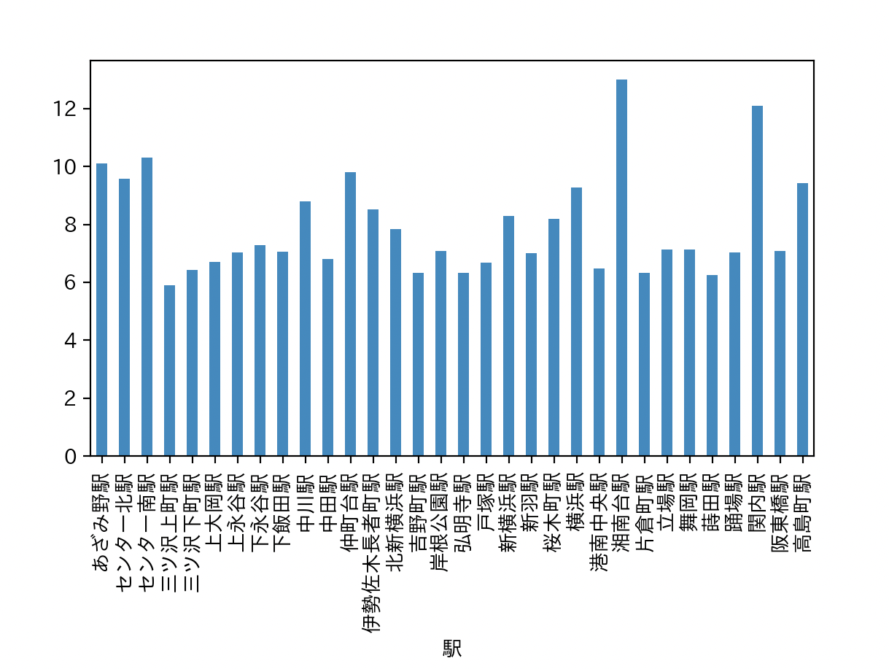

第8回の課題
賃貸情報の分析
賃貸情報のうち、私は家賃と築年数、合計時間と徒歩を比較した。
路線ごとに家賃と築年数の分析

グラフを見ると、みなとみらい線は築年数が浅い家が多いが、それほど家賃が高い。
JR山手線は家賃は安いが、築年数が古いことがわかる。
なので、築年数が20年以下で、家賃は7.５万円以下の家が適切だと思う。
路線ごとに合計時間と徒歩の分析

上の家賃と築年数のグラフと合計時間と徒歩のグラフを比較してみると、おすすめ路線は東急東横線、東急目黒線、ブルーライン。
おすすめ路線の中で、ブルーラインが最もいいと思う。
ブルーライン駅の分析

このような結果で、学校と近くて平均家賃が7.５以下の家を探す学生には、三ツ沢上町駅、三ツ沢下町駅、片倉町駅、岸根公園町駅の地域にある家をおすすめする。